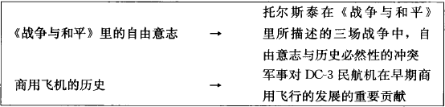
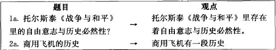
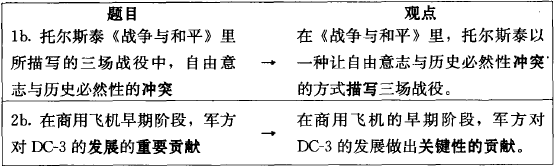
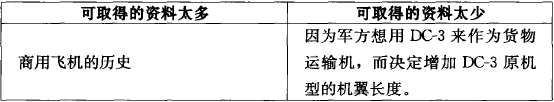

这一章我们将讨论如何找到你感兴趣的题目（topic），并将其限定在可处理的范围内，通过提问来促成一个难题（problem）的形成，进而转为一个可以引导你的研究工作的难题。如果你是个有经验的研究者，或已知道你要研究的题目及为什么要研究它，那么你可以跳到第四章；但如果你才正要开始进行第一个研究计划，你会发现这个章节很有帮助！
如果你随意地研究任何感兴趣的题目，由于选项太多而时间太少，这种自由反而可能会让你感到沮丧。你必须在某个时间点上决定一个题目，但除了题目以外，还得找到比完成课堂作业更有力的理由，支持你花数周或数月的时间进行研究、撰写研究报告，然后还得要求读者花时间阅读你的报告。
就像之前说过的，读者期待的不只是你把资料聚集起来加以报告，他们期望你的报告方式可以维持作者与读者之间的对话，而这样的对话将会创造出一个研究团体。因此，你必须从找到的数据中加以选择，来为读者解决他们想获得解答的难题。在所有的研究团体里，有些问题早已被广泛地争论过、被彻底地研究过，比方说像“人的个性如害羞或爱冒险，应归因于遗传还是学习”？然而，其他问题可能只会引起研究者的好奇心：例如 “为什么猫会用脸来磨蹭我们？” “为什么大颗的花生最后会跑到罐头的上层？” 等等。许多研究就是这样开始的：并非开始于这个领域里众所皆知的“大”问题，而是起于研究者心里渴望而想要追究的小问题。
如果你也有这样的渴望，那好极了！但就像我们讨论过而且不厌其烦重复的，在研究的某个时间点上，你必须确定对自己问题的解答对其他人是否也具有重要意义——对教师、同事、其他研究者，或是你的研究可能改变他们生活的一般大众。到时候，你的目标已不只是要回答一个问题，更要提出并解决其他人也认为值得解答的难题。
难题（problem）这个字眼本身就是个难题：难题通常意味着麻烦，但在研究者眼中则有一种很特别的意义，特别到我们得用接下来一整章来讨论。难题引发议题（issue），而这些议题大多是研究新手无法完全解决的，甚至会难倒资深的研究者。然而在确立研究难题之前，必须找到一个可以引领这个难题的题目；我们就从寻找题目开始。
我们之中的大部分人都有比兴趣更强的研究动力，但新手通常很难从研究兴趣中将题目缩限到足以进行一个研究计划。一个研究题目是个严密界定的兴趣，严密到足以想象自己成为这方面的专家。这并不代表你对此已有充分的了解或你在这方面的学习必须比你的教授懂得更多。你只是想要比你现在知道的更多一些。
如果作业可以让你自由选择任何合理的题目，我们的建议还是那句老话:从你最感兴趣的开始。没有什么能比全心投入自己的研究更能提升自己的研究质量。先列出两三个你想去探究的兴趣，如果你是为了特殊领域的课程所做的研究计划，就浏览一下最近的教科书，与其他同学谈谈，或是与你的老师讨论。你可以尝试借着此刻正在进行的作业，或是未来在其他课程的作业，来确认你的兴趣所在。
如果遇到瓶颈，可以上网或是到图书馆寻求支持。互联网似乎是比较容易的方法，但却可能误导你的方向，尤其是当你刚接触研究时。还是从下述的标准程序开始吧：
·对于一般写作课程的作业，从图书馆开始。看看像《文学期刊读者指南》（Reader's Guide to Periodical Literature）这类一般参考文献的标题。如果你已有大概的范围，使用像《美国人文学科索引》（American Humanities Index）或是《墨西哥裔美国人索引》（the Chicano Index）等特殊索引。(我们会在第五章讨论如何使用这些原始资料。）
将你可能感兴趣的标题浏览一遍，它们提供的不只是可能的题目，也是与这些题目相关的最新参考资料。如果你对题目已经有些想法，可以上网查询；但是如果对研究主题的方向仍然毫无头绪，上网捜索的数据可能会多到让你不知所措。有些索引数据库在网上就可能使用，但大多数仅允许浏览主题的标题。
·对于特定领域的第一个研究计划，浏览特定索引的标题，例如“哲学家索引”（Philosopher's Index）、“心理学摘要”（Psychological Abstracts）、或“妇女研究摘要”（Women's Studies Abstracts）等。
当你确定了兴趣的大概范围时，可以运用互联网寻找更多的数据以及帮助你缩限题目。（如果真的陷人困境，参阅本章最后的【快速提示】。）
·如果你正执行一个高级的研究计划，在确定研究题目之前，可能得先寻找容易取得的资源。
如果你已选定题目，却发现原始资料不易取得，可能就得重新来过。如果你先在图书馆或互联网上确认可以取得的原始资料，在规划研究时就可以很有效率，因为你知道从何处开始。
起初，你可能不知道如何将一个像“面具的宗教与社会语境”的兴趣转化为一个明确的题目。如果是这样的话，你得先阅读一些书面数据，才知道要怎么思考。不要漫无目的地阅读：你可以从一般百科全书的目录开始读起，然后再参考专业的百科全书或辞典，再浏览期刊或是网页，直到你对题目有个大致的雏形。唯有如此，你才能继续下面的步骤。
此时，你设定的题目可能广泛到可以作为百科全书的副标题，例如：太空飞行的历史、莎士比亚的问题剧、自然物种的原理之类的题目。假设你可以用四五个字陈述你的题目，那范围肯定太广泛，如：
对一个过于广泛的题目，即使手边已有少许数据，只要想到搜索相关数据就感到害怕，更不用说阅读这些资料了。因而你必须让题目更明确，就像这样：

我们利用增加特定的文字及词组来限定主题，如冲突、 描述、 贡献以及发展等等。这些名词是从描述动作或是关系的动词而来：与……冲突、 加以播述、 对……贡献以及发展出……如果少了这些文字，你的主题就会是静态的——《战争与和平》中的自由意志、商业飞机的历史。但是当你运用这源自动词的名词来描述题目时，就会让你的研究题目更接近一个让读者可能觉得重要的观点。
注意当题目变成一项陈述时可能会发生的情形，像题目（la）和（2a）就几乎完全没有改变：

而题目（1b）和（2b）就比较接近观点，而读者也会觉得有趣：

刚开始，像这样的观点可能会显得薄弱无力，但是当你持续进行计划时，将会继续修改成更为明确的观点。
一个比较明确的题目可以帮你看到各种落差、难解之谜以及不一致之处，让你借以将题目转成研究问题时可以提出质疑（之后会有更多这方面的讨论）。一个明确的题目也可以是你的暂时性标题（working title），一个别人问你正在做些什么时的简短回答。
注意：不要把你的题目变得太狭隘，以至于无法找到足够的数据来回答：

在进行这个步骤时，研究者通常都会犯初学者易犯的错误：快速地从一个题目进入到大笔的数据堆。当一开始他们有了个自认为还不错的题目时—如“亚拉莫战役传说的政治起源及使用”[3]——就直接开始搜索数据，譬如书籍或影片中的不同版本的故事、墨西哥版本或美国版本、19世纪版本或20世纪版本。他们搜集一堆故事的概述、有关这些故事的不同点及相似处的叙述、有关这些叙述如何与现代历史学家的看法不同。他们把这些数据都写下来并且总结：“因此我们发现许多有趣的不同点及相似处……”
许多高中老师会给这样的报告打一个及格分数，因为这样的报告显示这个学生有能力专注于一个题目、寻找相关数据，并且将这些信息在一篇报告中呈现出来——对于进行自己第一个研究的学生而言，这已经很了不起了。但在高级的课程中，包括大一的写作课程中，这样的报告就不够好，因为这只提供了片段的信息。如果作者提不出值得深究的问题，就无法提供值得一读的解答。阅读研究报告的读者并不只是想要获得信息，而是想要获得一个值得提出的问题的答案。当然，被某题目吸引的人，常认为任何与这个题目有关的信息都值得阅读：日本钱币或“猫王”电影海报的收藏者就会阅读任何相关的资料。然而，认真的研究者不会为了报告数据而报告数据，他们寻求的是自认为（也希望读者同意）值得提出问题的答案。
找出对某题目不懂之处的最佳方法，就是用许多提问来质疑它。首先，质问所属领域中通常会提的问题。比方说，历史学家对于亚拉莫战役的故事首先会提的问题是关于故事的来源、发展及其真实性。也可以提出新闻记者的标准问题，例如：什么人 （who）、 什么事情 （what）、 什么时间 （when）、 什么地点 （where）。但应特别着重在如何（how）及为什么（why）上。最后，你可以系统地提出四种分析性的问题：该题目的结构（composition）、历史（history）、类别（categorization）以及价值（values）。
把这些问题记录下来，但不要停下来找答案。（不要担心问题是否置于正确的范畴；范畴不过是用来激发你提问以及组织该问题的答案的。）
在亚拉莫的故事里，有哪些主题、剧情结构（plot structure）及主要人物？这些人物与剧情结构、剧情结构与实际战役、战役与人物，以及人物与人物之间又有什么关联？
政治家如何利用这个故事？它在墨西哥历史上扮演什么角色？在美国历史上它又是什么角色？哪些人讲了这个故事？哪些人听过这个故事？他们的国籍怎样影响这个故事？
这些故事如何发展？不同的故事如何有不同的发展？听众有什么变化？说故事的人有什么变化？他们述说故事的动机又有什么变化？
这些故事如何纳入事件的历史次序？什么导致了故事的变化？这些故事如何影响美国人的国家认同？在墨西哥呢？为什么它们可以经久不衰？
最典型的故事是什么？其他的故事如何不同？哪个故事与其他版本的差异最大？文字记载和口述的故事与电影版本如何不同？为什么墨西哥版与美国版的故事不同？
美国的历史故事中有哪些类似于亚拉莫战役的故事？墨西哥的历史故事呢？这些故事跟其他的神话战争故事相比又如何？有哪些社会也产生过类似的故事？
这个故事是否传达了某种道德教训？每个故事符合谁的利益？谁被赞美？谁被责难？为什么？
是否有些故事比其他故事更好？比其他故事更复杂？哪种版本是最好的或最差的？哪个部分最正确？哪个部分最不正确？
当你已问完了所有的问题时（或觉得够了），就该评价这些问题了。首先，将那些查阅工具书便找得到答案的问题放在一旁。有关“who”、“what”、“when”或“where”的问题十分重要，但这些问题问的可能只是关于已经定论的事实（虽然不全然如此）。而有关“how”以及“why”的问题，就可能引至更深入的研究及导向更有趣的答案。
接着，试着将小问题会聚成一点的、更有意义的问题。举例来说，有些亚拉莫问题是围绕讲述故事的人的利益及其对故事的影响的议题：
政治人物如何利用了这个故事？它在美国历史中扮演了什么样的角色？讲述故事的人有什么样的改变？他们讲述故事的动机有什么改变？这些故事如何影响美国的国家认同？这些故事与其他神话战争故事相比怎么样？故事所传达的道德教训值得传授吗？每一个故事又符合了谁的利益？
这些问题可以被汇集成一点的、更有意义的问题：
亚拉莫故事的述说者如何以及为何将这个事件赋予神话色彩？
当你确定一两个问题之后，它便能导引你更有系统地进行研究。一个问题可以将你的研究聚焦到只要搜集需要回答所提问题的资料，而当你找到认为可以支持答案的数据时，你便知道这是停止搜索数据的时候了。但是当你只有一个题目时，可以找的数据简直没完没了。更惨的是，你永远不知道什么时候数据才可以称得上是足够。
在前面这些过程中，最重要的目标是找到可以挑战你、或者最好是可以引发你强烈好奇心的问题。当然，你无法确定任何特定问题可以将你导引到什么地方，但这样的问题可以将你引领到一个你从未想象过的方向，开启你的新兴趣及研究的新视野。对于不仅限于挖掘事实的研究计划而言，找到好问题是个重要的步骤。有了一两个这样的问题，你就已经准备好进行下一步了！
就算是个有经验的研究者，恐怕也难以进行这一步，除非研究计划已进行了相当长一段时间。如果你是个初学者，甚至到你的研究已经结束时，你仍会对这一步有很深的挫折感。但无论如何，一旦有了能吸引你兴趣的问题，你就必须提出一个更困难的问题：为什么这个问题能吸引读者？ 为什么这个问题值得提出？
从“那又怎样？”这个问题开始，首先，问问你自己：
如果我不懂为什么雪雁会知道冬天要到哪里避寒，或是15世纪的小提琴家如何调试他们的乐器，或是亚拉莫战役为何会变成神话，那又怎样？如果我无法回答这些问题，那又怎样？
最终，你不仅要为自己、也要为读者回答这个问题。回答这个问题困扰了包括初学者或老手在内的所有研究者，因为要去预测什么能真正引起读者兴趣实在是太难了。但是，你不必尝试立刻回答这个问题，但可以依照下列三个步骤来回答：
如果你刚开始执行一项研究计划，可能只有一个题目和几个起头的好问题，尽可能用一句话具体描述你的题目：
我正在尝试学习（或进行、研究）________
填入你的题目。记得要使用以动词或形容词为基础的词：
我正在研究冷却系统修复的诊断过程。
我正在研究林肯总统早期演说中有关上帝预选说的信仰。
很快的，在句中加人一个间接的问题，而该问题是要指出你不知道或不明白，但想探索的问题：
1.我正在学习Ｘ
2.因为我想找出谁/什么/何时/何处/是否/为何/如何________
1.我正在研究冷却系统修复的诊断过程。
2.因为我尝试找出修复专家如何诊断故障原因。
1.我正在研究林肯总统早期演说中有关上帝预选说的信仰。
2.因为我想要找出他对于上帝预选说的信仰如何影响他对于南北战争起因的理解。
当你加上“因为—我—想要—找出—如何/为何”的句子时，便陈述了你为什么要研究这个题目：回答了一个对你而言很重要的问题。
如果你正在进行第一个研究计划，而且已经走到这个步骤，为自己庆祝一下吧！因为你已经让你的研究有了雏形，脱离了那些折磨研究者的漫无目的的资料收集与报告工作。现在，假如可以的话，就进行下一步吧！
这个步骤比较困难，但它能让你知道你的问题是否除了自己觉得有趣之外，对别人而言可能也具有重要意义。要进行这个步骤得加上另一个间接的、更大且更一般的问题来说明你问第一个问题的理由。以 “为了帮助读者了解如何、 为什么或是否” 来引人第二个隐含的问题：
1.我正在研究冷却系统修复的诊断过程。
2.因为我要尝试找出修复专家如何诊断故障原因。
3.为了帮助读者了解如何设计一个可以诊断及预防故障的电脑系统。
1.我正在研究林肯总统早期演说中有关上帝预选说的信仰。
2.因为我想要找出他对于命运及上帝意志的信仰如何影响他对于南北战争起因的理解。
3.为了帮助读者了解他的宗教信仰如何可能影响了他的军事决策。
正是因为对第三步的回答，你才可以声称你引起了读者的兴趣。如果那个较大的问题触及你领域范围内的重要议题——即使是间接的触及——你就有理由认为读者可能会关心你问题的答案，因而会关心你在第二个步骤中所提出的范围较小、前一个问题的答案。
有些研究者甚至是在开始搜集数据之前就可以理出上述整个模式，因为他们研究的是广为人知，在所属领域已有其他人感兴趣，以及被广泛调查过的问题。事实上，资深的研究者通常会从其他人已经问过，但尚未被彻底回答或未被正确回答的问题展开研究。然而，包括我们三个人在内的许多研究者，有时发现直到研究将近尾声之际，才能理出这些步骤。有太多的人在撰写研究成果时，都没有真正思考过这些步骤。
在计划开始之初，你可能没有办法顺利通过为自己题目命名的第一步。但是，你可以通过经常询问室友、亲戚或朋友来检验你的研究进程，从而强迫自己去质疑题目、落实这三个步骤。就算你无法很有自信地掌握这三个步骤，你也会知道自己已经进行到何处，以及还有哪些工作有待完成。
总结来说：你的目的在于说明：
1.你在写些什么——你的题目：我在研究……
2.你对这题目有什么不懂的地方——你的问题：因为我想要找出……
3.为什么你希望读者知道这些——你的理由：为了帮助读者更好地了解……
如果你刚开始一个严肃的研究，不要因为没办法通过第二个步骤而感到沮丧。只要你的问题仍让自己感兴趣，就往前迈进！你的老师应该会感到高兴，因为你已将自己的研究从简单的资料搜集提升至提出并回答问题的层次了。
如果你是个进行高级研究的研究生，那么无论如何你一定要进行到最后一个步骤。因为回答最后一个问题，可以帮你创造你正在努力建立的与所属研究团体成员之间的关系。这是你进人这场学术对话的人场券。
在接下来的章节里，我们将回到这三个步骤以及它们所概括的问题。正如你将看到的，它们之所以如此重要，不仅是因为它们可以帮助你找出想回答的具体问题，更因为它们能帮助你找到并表达你想要读者认可和重视的难题。
如果你在所属领域里已经有些经验，但仍然找不到研究题目，不妨利用一些快速研究来寻找题目。阅读近期的文章以及过去的短文，或者最近的博士论文，仔细阅读它们的结论：这些作品常常提出对未来研究的建议。你也可以浏览互联网上与所属领域相关的讨论团体，看看最近的相关争议的重点。
但如果你是个初学者，而你的老师并没有建议特定的题目，你可以从我们对浏览参考书目指南的建议开始。如果你脑袋里仍旧是一片空白，试试下面的步骤。
【注释】
[3] 亚拉莫是天主教在美国得克萨斯州圣安东尼奥（San Antonio）的传教区。1836年189位战士为抵抗墨西哥将领圣安纳（Santa Anna）的军队，持续对抗了13天，终因体力及资源耗尽，被Santa Anna军队的强势攻击所歼灭。——译注